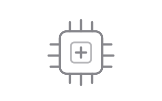

刷机
按「从解锁到救砖」的顺序整理。每一块都写清原理、步骤和风险点 —— 先知道会发生什么，再动手。
这里会写什么
9 个主题，按动手的顺序排列。
01 Bootloader 解锁 Unlock

解锁 Bootloader 是刷机的起点，也是唯一不可逆的那一步：它会清空全部数据，多数厂商还会因此失去保修，部分机型在解锁后指纹支付、DRM 视频和个别系统服务会受限。所以第一步永远是 —— 备份、确认、再动手。
小米 / Redmi
需要在小米社区申请解锁权限，通过后使用 Mi Unlock 工具在 fastboot 模式下解锁。绑定账号后有等待期（常见为 7 天，不同机型与时期会调整），期间设备要保持在线。解锁会清空数据。
一加 / OPPO / realme
一加传统上直接支持 fastboot flashing unlock。OPPO 与 realme 的国行机型多需要先通过「深度测试」申请，审核通过后才能在 fastboot 下解锁，且有名额和次数限制。
Google Pixel
最干净的一条路。开发者选项里打开「OEM 解锁」，然后执行 fastboot flashing unlock 即可。没有等待期，也能随时 lock 回去。
三星
开发者选项里打开「OEM 解锁」，关机后进下载模式（Download Mode）长按音量上确认。注意解锁会触发 Knox 熔断（Knox Warranty Void 0x1），三星支付、安全文件夹和部分银行类应用会永久失效，且不可恢复。
华为 / 荣耀
2018 年起官方已停止发放解锁码，官网申请通道关闭。目前没有官方途径，第三方「解锁服务」风险很高，不建议尝试。
索尼
在索尼官网的解锁页面提交 IMEI 申请解锁码，然后 fastboot oem unlock 0x<解锁码>。部分机型在解锁后会丢失相机的一部分功能。
摩托罗拉
在摩托官网申请解锁码，再执行 fastboot oem unlock <code>。部分运营商定制机不支持解锁。
Nothing 及其他
多数新机采用 Google 的标准方案，直接 fastboot flashing unlock 即可。
通用流程
adb reboot bootloader 进入 fastboot 模式 → fastboot devices 确认连接 → fastboot flashing unlock（老机型为 oem unlock）→ 在机器上用音量键确认。整个过程数据会被清空。
解锁之后
解锁状态下，银行、支付、流媒体等应用会通过设备完整性检测识别出设备被改动而拒绝运行。这需要用额外的隐藏手段处理，且不保证永远有效。
解锁是不可逆的分水岭：数据清空、保修受影响、部分功能永久受限。动手前请确认官方固件包已下载、数据已备份、账号等待期已过。
02 Root 权限管理 Root
Root 的目的不是「为所欲为」，而是拿到系统的最高权限。今天主流是三条路线 —— Magisk、KernelSU、APatch，而它们各自还有分支。
Magisk（topjohnwu/Magisk，63.1k★）
目前最主流、生态最庞大的方案。通过修补 boot 镜像实现 systemless（不修改系统分区）的 root，支持 Zygisk、模块系统与用于隐藏 root 的 DenyList。代价是每次系统更新后需要重新打补丁。
Magisk 的分支
- Magisk Delta（HuskyDG）：曾很流行的分支，加入了对 KernelSU 模块的兼容和更强的隐藏，现已归档。
- KitsuneMagisk：Delta 的后继项目，同样已归档。
- Magisk Alpha：国内的第三方构建，功能更新较快，但不是官方仓库，来源需要自行判断。
KernelSU（tiann/KernelSU，18.9k★）
内核级方案，root 直接实现在内核里。要求设备内核支持（GKI 机型或第三方内核）。优势是与系统结合更紧、隐藏更自然，并支持 KPM 内核模块。门槛是需要刷入支持 KernelSU 的内核。
KernelSU 的分支
- SukiSU-Ultra（6.5k★）：在 KernelSU 基础上扩展了内核模块（KPM）与更多隐藏特性。
- KernelSU-Next（4.4k★）：维护活跃的分支之一。
- BakaSU（原 ReSukiSU，1.7k★）：同样基于 KernelSU 的分支。
APatch（bmax121/APatch，8.0k★）
通过给内核打补丁（KernelPatch）获得 root，位置介于 Magisk 与 KernelSU 之间：不需要编译内核源码，又能提供内核级的 root 与 KPM 支持，并兼容相当一部分 Magisk 模块。
APatch 的分支
- FolkPatch（LyraVoid，1.2k★）：直接修补 boot 分区来获得内核 root，部署方式更简单。
配套生态
- ReZygisk（4.0k★）：为 KernelSU / APatch 提供 Zygisk 实现。
- LSPosed（24.9k★）：Xposed 框架的现代继承者。
- Zygisk-Assistant（2.6k★）：用于隐藏 root，适配 Magisk / KernelSU / APatch。
- susfs4ksu（2.6k★）：为 KernelSU 提供内核级隐藏。
历史遗留
SuperSU 曾是最主流的 root 方案，后被转手并停止维护；更早还有 ChainsDD 的 Superuser。今天如果还有教程教你用 SuperSU，基本可以跳过。
选哪条路线取决于机型：能刷第三方内核的，KernelSU 系体验最自然；只想改 boot 镜像的，Magisk 最稳；想省去编译内核又想接近内核级 root 的，可以看 APatch。分支意味着更快的新特性，也意味着更小的用户基数和更少的踩坑资料。
03 第三方 ROM ROM
官方停更并不等于用不下去。第三方 ROM 的差别主要在「干净程度、功能完整度、适配质量」这三件事上。
LineageOS
类原生的老牌代表，代码干净、更新节奏稳定、机型覆盖广。功能克制，适合想要接近原生体验的人。
PixelOS / PixelExperience
把 Pixel 的界面与功能搬到其他机型上，观感统一、上手快。PixelExperience 已停止维护，PixelOS 等接力了这一部分需求。
crDroid / Evolution X / RisingOS
属于「功能丰富」的一派，在类原生基础上加入大量自定义选项 —— 状态栏、手势、主题、性能模式，适合喜欢折腾界面的人。
AOSPA / OmniROM
更偏工程与尝鲜的分支。历史上不少特性（例如手势导航）都是从这类项目里先出现的。
GSI（通用系统镜像）
不针对具体机型，基于 Treble 通用。好处是几乎所有支持 Treble 的机器都能刷，坏处是相机、通话、传感器这些依赖厂商适配的部分容易出问题。
官改包
保留官方相机与功能，只做精简和优化，风险在于来源不透明。刷之前看清作者、更新记录和已知问题。
怎么判断值不值得刷
- 维护者是否还在更新；
- 已知问题列表是否命中你的刚需（通话、信号、相机、指纹）；
- 社区里有没有同机型的人长期在用。
刷 ROM 前务必确认包的机型代号与你的设备完全一致 —— 代号差一个字母，结果可能就是变砖。
04 内核与调优 Kernel

内核决定了 CPU 怎么调度、频率怎么升、内存怎么回收、发热怎么压制。厂商的默认调教偏向保守和续航，第三方内核则把选择权交回给你。
调度器与频率
多数「省电内核」做的事情就是压低小核频率、延后大核上线，「性能内核」则相反。真正的差别往往体现在响应速度和待机功耗上，而不是跑分数字。
温控
厂商温控通常偏保守，导致玩一会儿就降频。自定义温控可以放宽阈值换取更长时间的性能，代价是更高的温度和更短的器件寿命。
I/O 与内存
调整读写队列与内存回收策略能影响多任务切换的流畅度，但收益通常没有想象中大，而且容易在长时间使用后暴露问题。
现实提醒
绝大多数「刷了就明显变快」的说法缺乏对照测试。能稳定感知的一般只有调度响应和待机功耗这两项。建议调优前先记录基线数据，改完再对比，才知道有没有用。
内核与系统版本强相关，刷错版本最常见的后果是开不了机。刷之前确认内核支持的系统版本范围。
05 模块 Modules
模块是给系统打补丁最轻量的方式：改字体、换相机算法、拦广告、修掉某个耗电的后台服务，都可以用一个模块解决，而不用动系统分区。
模块怎么工作
Magisk / KernelSU / APatch 的模块，本质是一段开机时被执行的脚本，加一组被挂载覆盖的文件。它不写入系统分区，所以通常能在系统更新后保留（也可能因更新失效）。
常见用途
字体替换、hosts 去广告、音效增强、相机算法替换、系统界面调整、性能调度切换等等。
LSPosed 的位置
LSPosed 本身不是模块，而是一个「让模块生效」的框架 —— Xposed 的现代实现，能在不修改 APK 的情况下改变应用行为。很多深度定制都依赖它。
装模块的正确顺序
一次只装一个，重启观察。如果出现开机变慢、异常发热、耗电暴涨，先禁用该模块。多个模块冲突时，用「逐一半禁用」的方式定位，比全卸再全装高效得多。
模块生态里既有认真维护的项目，也有来路不明的脚本。装之前看清它改了什么文件、要什么权限。
06 ADB 与命令行 ADB
ADB 是绕过图形界面直达系统的后门。它的能力远超多数人的想象，门槛却比看上去低。
基础连接
打开开发者选项里的 USB 调试，连上电脑执行 adb devices 确认连接。Android 11 之后支持无线调试，adb pair 配对后 adb connect 即可，连数据线都省了。
常用操作
adb install / adb uninstall 装卸应用；adb push / adb pull 传文件；adb shell 进入设备终端；adb reboot bootloader 进 fastboot；adb sideload 刷入 OTA 包。
排错利器 logcat
adb logcat 能实时看到系统与应用的日志。抓崩溃时先 adb logcat -c 清空，再复现问题，然后 adb logcat -d > log.txt 导出，问题基本一目了然。
fastboot
用来刷分区镜像，常用的是 fastboot flash boot boot.img、fastboot flash recovery、fastboot flashing unlock。注意 fastboot 模式下 adb 不可用，两者是不同模式。
其它常用
adb shell dumpsys 查看系统服务状态；adb shell pm list packages 列出已安装应用；adb shell top 看进程占用；adb shell getprop 读系统属性。
把 adb 和 fastboot 装好、驱动装对，是刷机路上性价比最高的一件事 —— 后面几乎所有问题都要靠它们解决。
07 救砖与备份 Rescue
刷机真正的底气来自备份。能救回来的，通常都是那些提前准备好了官方固件和刷机工具的人。
先备份什么
至少备份 boot（内核）、system / super、vendor，以及 EFS / persist 这类保存基带与传感器校准的分区。这些分区一旦误刷，可能导致无信号且难以恢复。
恢复模式（Recovery）
第三方 Recovery（如 TWRP）能备份与恢复分区、刷入 zip 包、挂载存储拷文件，是救砖的核心工具。
fastboot 修复
卡开机、刷错 boot 时，用 fastboot flash boot 重新刷回官方镜像，往往就能进系统。
深度刷机模式
高通平台叫 EDL（9008 模式），联发科平台叫 BROM / Preloader 模式。这是连 fastboot 都进不去时的最后手段，用厂商工具或通用工具直接写入底层分区。属于「用错了会更砖」的操作，务必确认固件与机型完全对应。
变砖分级
- 能进 Recovery —— 好办；
- 只能进 fastboot —— 还能救；
- 只能进 EDL / BROM —— 需要底层工具；
- 连电脑都不识别 —— 可能需要拆机或专业工具。
救砖的关键不是技术多高，而是「有没有原始固件、知不知道自己的机型代号」。这两件事提前准备好，绝大多数情况都能自己解决。
08 常见坑与排错 Troubleshoot
卡开机、无限重启、指纹失效、传感器异常、OTA 报错、电量显示乱跳 —— 这些现象背后往往就那么几个原因。
卡开机动画 / 无限重启
常见原因是分区没刷干净、内核与系统版本不匹配、或模块残留。先禁用所有模块再排查，必要时格式化 data 后重刷。
指纹 / 人脸失效
解锁或刷 ROM 后，指纹数据与系统不匹配。部分机型可以通过恢复原厂对应分区解决。
传感器异常
方向、距离、光线传感器失灵，通常是 persist 分区被覆盖。刷 ROM 前务必备份该分区。
OTA 更新失败
system 分区被改写（装了模块、改过 hosts）会导致更新校验不通过。Magisk 提供「还原原厂镜像」的流程，还原后再更新。
电量显示乱跳 / 掉电快
前者一般是电池校准数据被清，需要重新校准；后者可以换内核验证是不是功耗策略的问题。
银行 / 支付应用拒绝运行
设备完整性检测（SafetyNet / Play Integrity）未通过。这与解锁状态、root 隐藏是否彻底都有关。
排错顺序
先看现象，再想最近改了什么，最后才动手重刷。反复重刷而不定位原因，只会浪费时间。
绝大多数「疑难杂症」都能通过「回想最近改了什么」来定位，而不是靠盲目重刷。
09 刷机工具 Tools
命令行能做的事最多，但图形化工具有时候更省事。下面这些是目前比较常见的。
UnlockTool
Windows 平台的多品牌解锁与刷机工具，支持机型范围很广，功能偏「一站式」，属于付费软件，版本更新频繁（已到 2026.09 版）。适合需要跨品牌处理设备的人。
刷机匣（GeekFlashTool）
免费的安卓图形化深度刷机工具，兼容高通与联发科主流芯片，支持 Bootloader 解锁与系统刷写，能自动检测机型并匹配刷机包。对新手比较友好，不用记一堆命令。
柚坛工具箱（Uotan ToolBox）
开源项目，定位是现代化的 Android 与 OpenHarmony 工具箱，集成了包括第三方 Recovery 刷入在内的多种刷机工具，并配有图形界面。
厂商官方工具
三星用 Odin，小米用 Mi Flash（线刷），高通平台常用 QFIL / QPST，联发科平台常用 SP Flash Tool。救砖时官方工具的可靠性最高。
通用工具
fastboot 与 adb 是跨平台基础，几乎所有操作最后都落到这两条命令上；TWRP 等第三方 Recovery 则负责 zip 包与备份恢复。
怎么选
日常刷机用 fastboot + Recovery 就够了；机型冷门、需要底层修复时再看 UnlockTool 这类综合工具；新手想少踩坑，刷机匣和柚坛工具箱的门槛更低。
工具只是手段。真正决定成败的是：机型代号、固件版本、以及你有没有备份。
一点说明
刷机有风险，且不同机型差异极大。站内经验主要基于高通平台，其他平台思路相通但细节不同。动手前请务必自己确认机型对应的资料，并做好完整备份。